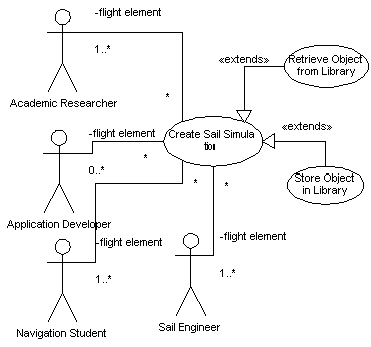

|
|
SailAway Project |
| Diagram |  |
|---|---|
| Name | Create Flight Simulation |
| Iteration | Finished |
| Summary |
A user records into the system details about the initial conditions of a
sail flight. These details involve an initial sail and command set. The
System facilitates the gathering of this information from the user if the
use mode for the System is interactive and the marking of the parts for
inclusion in a simulation.
When the user completes all the information gathered by the System for this case, they will have a simulated flight that may be checked for consistency and then run. |
| Basic Course of Events |
|
| Alternative Paths |
If the system is configured for the use of a library, any changes in step 2,
3, or 4 will automatically be associated and saved with the current working
flight in the library.
If the system is configured to use a library at step 1, it will present the user with the option to load a pre-existing flight to act as a starting point for further additions or deletions. If multiple libraries are available, the storage and retrievals use cases will make the decisions regarding which ones to use. |
| Exception Paths | At step 5, simulations that are not well-formed are brought to the attention of the user via the Notification Tool. Additions are saved as part of the simulation, though, unlike invalid additions to the subparts of a simulation. |
| Extension Points |
When the System adds objects to a flight simulation, these changes trigger a
testing process to determine whether the whole collection is well-formed.
This occurs at step 5.
When the System records a simulation in a library at step 6, it will use a separate process to do the actual saving due to the complexity of the interaction between the System and a remote library and the fact that the separate process can be re-used by other sections of the system. When the System retrieves a simulation from a library at step 1, it will use a separate process to do the actual getting due to the complexity of the interaction between the System and a remote library and the fact that the separate process can be re-used by other sections of the system. |
| Trigger | The User triggers this case by changing any part of a flight simulation. |
| Assumptions | . |
| Preconditions |
|
| Postconditions | A Simulated Flight will exist after this case is complete. That does not imply the simulation will be well-formed or run. |
| Related Environment Rules | 1 |
| Author | Dr Alfred W Differ |
| Date |
2001/11/07 - Facade 2002/01/03 - Filled 2002/02/07 - Focused 2002/02/15 - Finished |